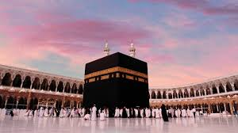
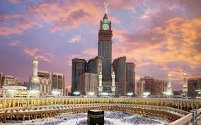
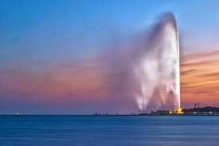
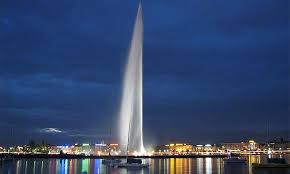

Your guide during your visit to the kingdom is here!
ARE YOU READY? LET'S START OUR JOURNEY!
Saudi Arabia’s rich heritage and traditions have been shaped by its position as a historic trade hub and the birthplace of Islam. In recent years, the Kingdom has undergone a significant cultural transformation, evolving century-old customs to fit the contemporary world we live in today.
Lets start with the most iconic one: Mecca!

Mecca is considered one of the most visited cities in the world,
and the reason is clearly due to its great religious status,
as it is considered a destination for all Muslims from around the world.
This is undoubtedly due to the location of the Holy Kaaba there,
and in the language of numbers, Mecca is the seventh most visited
city in the world with about 13.5 million visitors. Mecca,
located in the west of the Kingdom of Saudi Arabia,
is the holiest city in Islam, and every year millions of Muslims
from all over the world travel to it to perform the obligatory
duties of Hajj and Umrah; What turns the city into one of the most
popular destinations for religious reasons.

Adorning the southern facade of the Masjid al-Haram is
the Abraj al-Bait Complex; towering over the Great Mosque,
it is a seven-building complex with the central clock tower
having a length of 601 m (1,972 feet), making it the world's
fourth-tallest building. All seven buildings in the complex
also form the third-largest building by floor area.
The Mecca Gate, known popularly as the Quran Gate, sits on
the western entrance of the city, which is the route from Jeddah.
Located on Highway 40, it marks the boundary of the Haram area where
non-Muslims are prohibited from entering. The gate was designed in 1979
by an Egyptian architect, Samir Elabd, for the architectural firm IDEA Center.
The structure is that of a book, representing the Quran,
sitting on a rehal, or bookrest.
In conclusion,
Don't forget to try the most popular fried chicken all over THE KINGDOM, AL-BAIK.
AL-BAIK is a local fast-food chain, is very popular among pilgrims and locals alike.
Until 2018, it was available only in Mecca, Medina, and Jeddah,
and traveling to Jeddah just to get a taste of the fried chicken was common.
Here are all the links you'll need in your journey in MECCA:
That's it about MECCA,
The rest is up to you to discover on your own as you go and more and more to do,
enjoy!
Lets move to the capital: Riyadh!
What to do in RIYADH?
Riyadh season:
You must have heard about it, One of the most widely anticipated events of the year, Riyadh Season is back in action for a fourth year.
The gathering features 12 zones, each offering something unique,
from concerts to five-star dining and everything in between.
Related events:
Boulevard World
Visitors can explore world civilizations and cultures and experience exceptional adventures in each area.
An art scene awaits you!
If you
are into art and art galleries so THE ABSTRACT ART GALLERY will be the perfect spot for you!
The Abstract Art Gallery connects between the artist and the audience, as it hosts local art pioneers and provides a space
to display their work. Cultural and popular legacies appear on the walls of the exhibition,
with their overlapping colors and artistic styles are evident in the art pieces. The exhibition scenes allow you to immerse in
plastic and abstract arts, as the pleasure increases while looking at the geometric angles and color textiles of the artworks,
with the participation of a group of art connoisseurs in the exhibition.
We will end our journey in Riyadh with Masmak Fort!
The ancient Al-Masmak Palace stands tall in the middle of the city of Riyadh. Its magnificence did not stand in the way of extending
its splendor, so it turned into a tourist destination after being a silent witness to the momentous events in the history of the founding of
the Kingdom of Saudi Arabia.
The palace was built in the fourteenth century AH, during the reign of Imam Abdullah bin Faisal, and it was his residence,
and a house for rule and money. The palace is considered an impregnable fortress that protects against enemies, so it is distinguished by
the strength and height of its walls. It has no windows, windows, or openings, except for two entrances and small openings that expand
gun barrels during battles.
Masmak Palace Museum
The museum was divided into 6 main parts, including its basic contents: the palace gate on the western side,
the mosque, the Majlis - or the Diwaniyah as it is described locally -,
the well on the northeastern side of it, the towers that are distributed in the four corners of the courtyard,
and the residential units that were the ruler’s residence.
and its guests were then converted into exhibition halls. You can wander through the entire history through visual displays
inside the palace, and you will also see some ancient heritage pieces hanging on its walls.
On any day of the week, you can enjoy the ancient and immutable heritage,
and learn about all aspects of the Kingdom’s history and its movements, from eight in the morning until nine in the evening.
You can also view the museum’s official page to ensure that the time of your visit does not coincide
with the regular maintenance schedules.
For further information you can visit the museum’s page.
Now we reach our last stop, the charming city: JEDDAH!
We start with the popular one, Jeddah Corniche
Jeddah Corniche , also known as the Jeddah Waterfront (JW), is a 30 km coastal resort area of the city of Jeddah,
Saudi Arabia. Located along the Red Sea, the corniche features a coastal road,
recreation areas, pavilions and large-scale civic sculptures as well as King Fahd's Fountain,
the highest fountain in the world. Also located here is the Al-Rahmah Mosque (formerly known as the Fatimah Mosque),
which is a popular attraction to visitors.
Moving on to our next spot, King Fahad Fountain
While you are enjoying the fresh breeze on Corniche, You can enjoy the most famous landmark ever...the symbol of Jeddah,
King Fahad Fountain.
King Fahd's Fountain, or Jeddah's Fountain, is the highest fountain of its kind in the world,
according to the Guinness Book of World Records. It is located in front of the beaches of the city of Jeddah
on the western shore of Saudi Arabia on the Red Sea. It is considered one of the landmarks of the city of Jeddah.
King Fahd bin Abdulaziz Al Saud gave it to the city of Jeddah, as it was Previously,
one of the powerful pumps that Saudi Arabia bought in the 1973 war, to keep its military plan secret from Israel at that time.
It is 312 meters high, and the weight of the water pushed into the air (at any
moment) exceeds 18 tons.
The viewer can see it from all over the city of Jeddah.
 
The only and unique one of its kind in Saudi Arabia, Fakieh Aquarium!
Fakieh Aquarium, Jeddah is the only Saudi Arabian town to have an aquarium, making the Fakieh Aquarium truly unique.
The Aquarium is home to all the major marine species from the depths of the Red Sea.
More than two hundred marine animals are to be found there, making a superb spectacle for visitors to enjoy.
There are even some very rare species, like the green turtle or the dragon-fish; it's a unique chance to get close to them.
In all, about seven thousand creatures are gathered together in this breathtaking place.
This makes the Fakieh Aquarium in Jeddah the perfect place to appreciate the diversity
and the richness of the fauna and flora of the Red Sea.
Sited in pleasant surroundings close to the sea,
the aquarium is a wonderful place that will both interest grown-ups
and enchant the little ones. It's the ideal place to spend some quality family time,
with play areas and restaurants on-site.
The aquarium itself offers numerous activities.
After seeing all the different tanks and after going through the magnificent undersea tunnel
that makes you feel that you are yourself underwater,
you can for example choose to see a dolphin show or sometimes a sea-lion show. It's even possible to book special moments with the dolphins,
to swim with them, at certain times of the day.
The Fakieh Aquarium is really an unmissable place to see during your visit to Jeddah.
To go there is a fantastic opportunity to see the incredible wonders of the Red Sea, to explore and to learn in a fun way.
For further information you can visit their website here.
Here ends our short trip that we went through together,
during which we got to know some of the Kingdom’s landmarks,
and there is much, much left for you to discover on your own
when you go.
So, are you ready?!